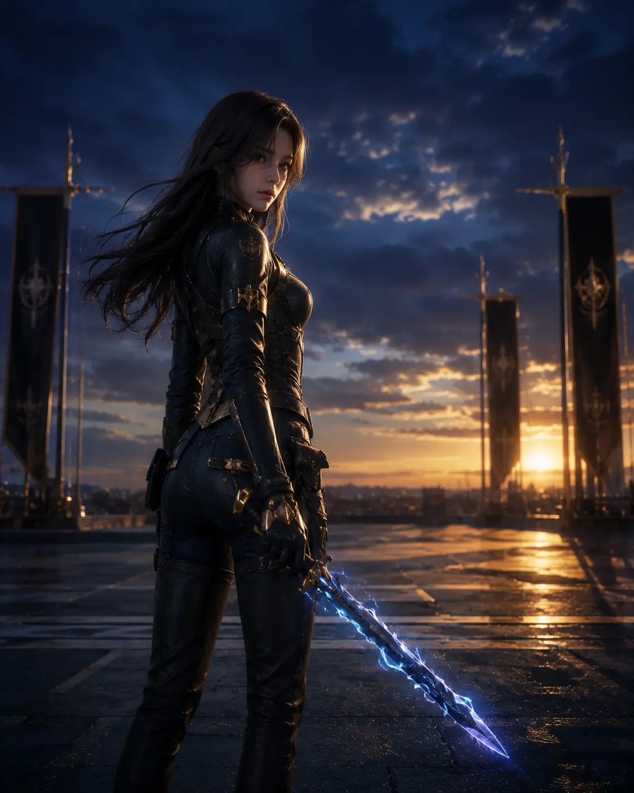
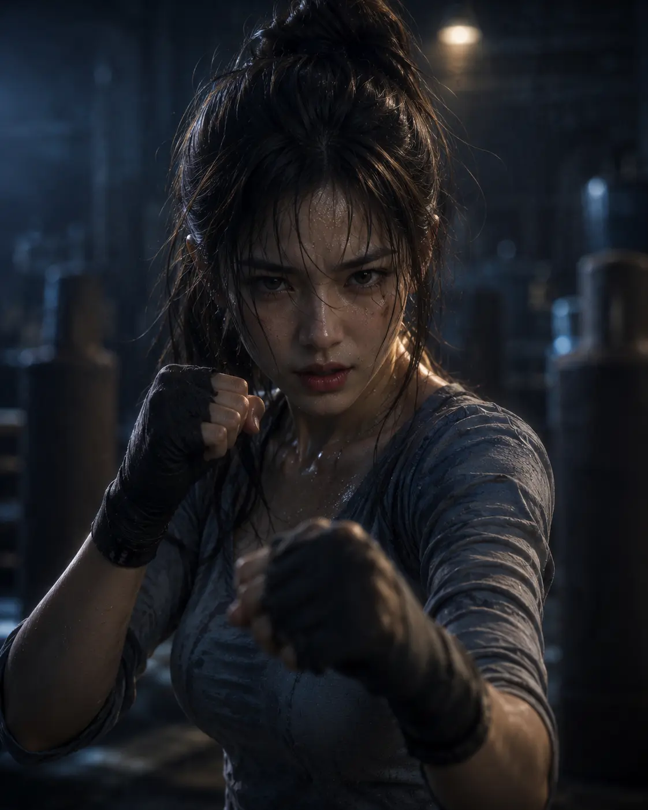
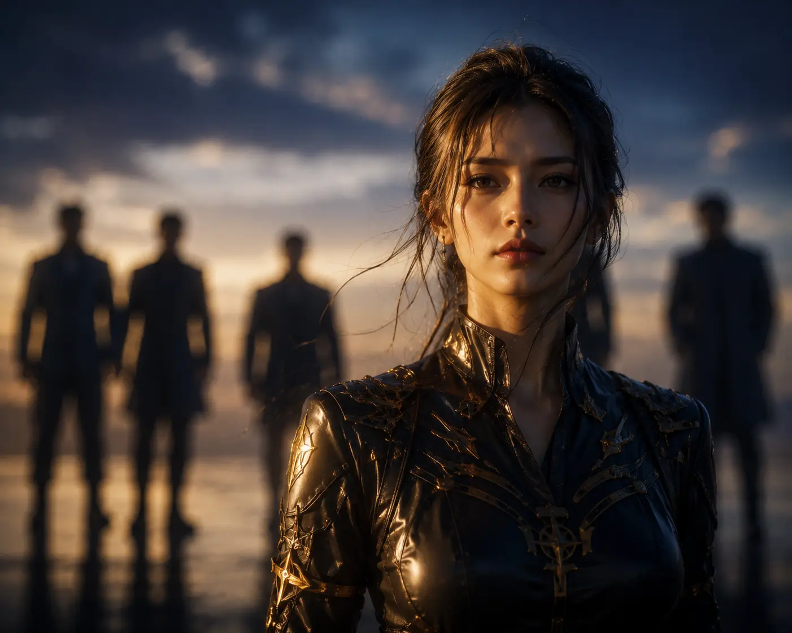
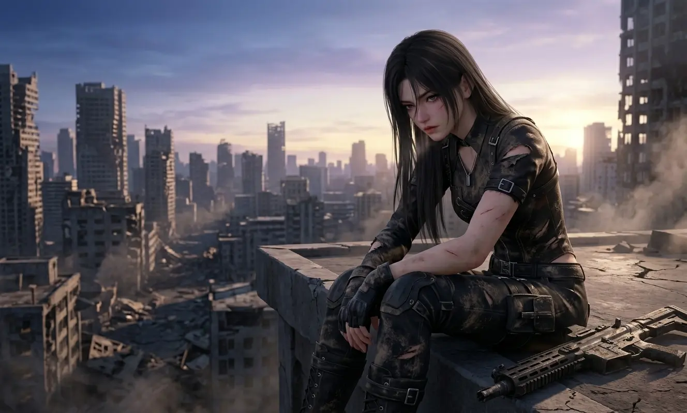
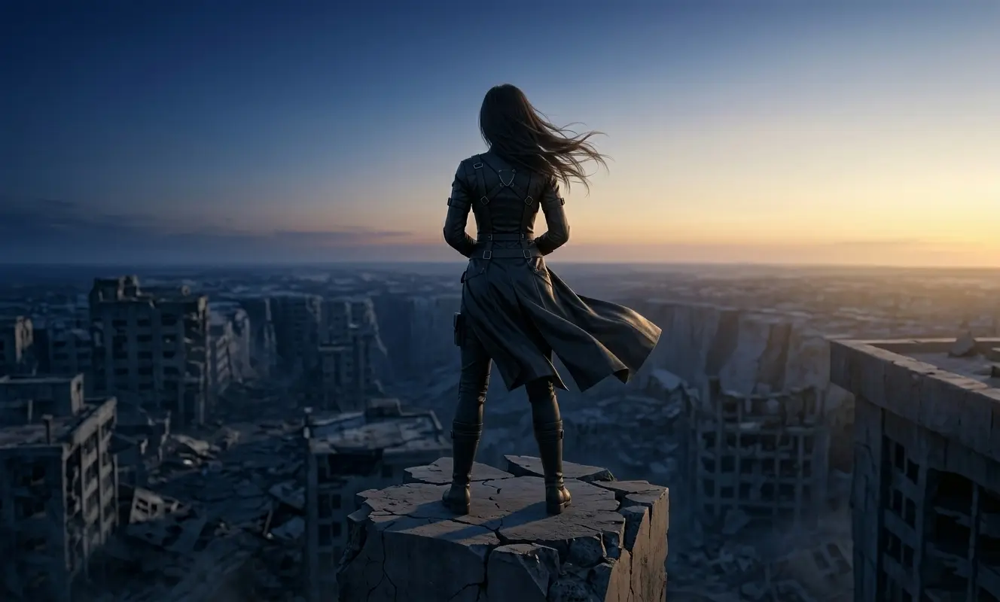

The quiet rebellion of being the one who chooses.
In most otome games, the protagonist exists in a very specific orbit. She is the sun — no, that's not right. She is the moon. Reflecting light. Illuminated by the men around her. Her story begins when they arrive. Her growth happens because they inspire her. Her happy ending is measured by which one she ends up with.
For a long time, I assumed Love and Deepspace would be the same.
I was wrong.
Somewhere between the early chapters of the main story and the depths of the N109 Zone, I realized something had shifted. The MC wasn't waiting to be rescued. She wasn't blushing her way through awkward encounters. She wasn't a blank slate for players to project onto.
She was a person. With her own fears. Her own strengths. Her own choices.
And those choices mattered.

Figure 1: The MC — not waiting, not posing. Preparing.
This is not an analysis of the men who love her. This is an analysis of her. The woman who refused to be a prize, a damsel, or a trophy. The quiet rebellion of a girl who decided, very early on, that she would be the one holding the sword.
The MC's journey begins like many heroines: she's new, she's inexperienced, she's in over her head. But unlike the typical "fish out of water" protagonist, she never once asks someone else to fix her problems.
She trains. She fails. She gets back up.
What strikes me most about her early arc is the absence of helplessness. She's outmatched, yes. But she's not passive. When Xavier saves her, she doesn't swoon — she studies his technique. When Zayne heals her, she doesn't simper — she asks how she can avoid needing healing next time. When Rafayel complains, she doesn't indulge — she challenges him. When Sylus tests her, she doesn't break — she proves him wrong.
Sylus didn't kidnap a victim. He kidnapped a variable. Someone he couldn't predict. Someone who, when pushed, pushed back. The MC's response to Sylus's "obey me" isn't submission — it's a quiet, stubborn refusal to be controlled. She doesn't win by being stronger. She wins by refusing to play his game on his terms.
This is agency. Not the loud, declaration-of-independence kind. The quiet kind. The kind that says "I will make my own decisions, even when they're hard, even when they're scary, even when everyone tells me I'm wrong."
By the time she reaches the mid-game content, the MC isn't just competent — she's formidable. Other hunters respect her. Wanderers fear her. The men who once saw her as someone to protect now see her as someone to stand beside. Not behind. Beside.

Figure 2: Growth isn't linear. But she never stopped moving forward.
That distinction matters. Because it changes the entire power dynamic of the game. The MC isn't weaker than the male leads — she's different. Her strength isn't in raw power. It's in resilience. Adaptability. The willingness to keep fighting even when the odds are stacked against her.
Here's something I've never seen anyone talk about.
In most romance games, the protagonist is reactive. The love interests pursue. She responds. She chooses from the options presented to her. Her agency is limited to saying "yes" or "no" to advances she didn't initiate.
Love and Deepspace flips this script. Subtly. Quietly. But unmistakably.
Watch the MC's interactions closely. She doesn't wait for Xavier to open up — she asks the hard questions. She doesn't hope Zayne will notice her — she makes her presence impossible to ignore. She doesn't beg Rafayel for attention — she gives him space and lets him come to her. She doesn't submit to Sylus — she earns his respect by standing her ground.
In every relationship, the MC is the one who sets the terms. Not through manipulation. Through clarity. Through knowing what she wants and being unafraid to reach for it.
This is reverse psychology in the most empowering sense. The MC doesn't wait to be chosen. She chooses. And her choices aren't arbitrary — they're deliberate, informed, and hard-won.
Of all her choices, staying with Sylus is the most revealing. He's dangerous. He's unpredictable. He's everything a "good girl" protagonist should avoid. And she stays anyway. Not because she's naive. Not because she's trying to "fix" him. Because she sees something worth staying for, and she's confident enough in her own judgment to trust it.
That's not a woman who needs saving. That's a woman who knows exactly what she's doing.
The men don't "win" her affection. She gives it. Freely. Intentionally. And she can take it away just as easily. That power imbalance — the one where the woman holds the cards — is almost never depicted in mainstream romance media. And it's revolutionary.

Figure 3: The moment of choosing — not passive, not pressured. Deliberate.
The MC doesn't need a man to complete her story. She is already whole. The men are additions. Enhancements. Not requirements.
Here's where the MC's story becomes truly compelling.
Her strength comes at a cost.
Every battle leaves scars. Every mission takes something from her. Every time she pushes herself too far, her body reminds her that she's still human, still fragile, still capable of breaking.
This is the detail that makes her real. The MC isn't invincible. She doesn't shrug off injuries with a quippy one-liner. She bleeds. She tires. She has moments where she wants to give up.
And then she doesn't.
The game doesn't show every injury. But the implication is there. Late nights in the medical bay. Missions that go wrong. Close calls that leave her shaking long after the adrenaline fades. She carries these moments with her. They don't make her weaker. They make her human.
The MC's resilience isn't magical. It's earned. Through failure. Through loss. Through the quiet, grinding work of getting back up every single time she falls.
One of the most underrated aspects of the MC's characterization is her refusal to be a burden. She doesn't ask for help even when she needs it. She downplays her injuries. She pushes through pain because she's terrified of being seen as weak.
This isn't strength. This is vulnerability masquerading as strength. And the game knows it. The male leads see through it. They call her out on it. Gently. Patiently. They remind her that asking for help isn't a failure.
And slowly, she learns to let them in.
That's the real arc. Not learning to be stronger. Learning that strength and vulnerability aren't opposites.

Figure 4: Even hunters need to rest. Even heroes need to be held.
The MC's power isn't free. She pays for it. Every single day. And the fact that she keeps paying — keeps fighting, keeps choosing, keeps loving — is what makes her extraordinary.
I've been thinking about why the MC resonates so deeply with players.
It's not because she's perfect. It's because she's not.
She doubts herself. She makes mistakes. She says the wrong thing. She hurts people she cares about, and she carries that guilt with her. She's messy. Contradictory. Human.
When we play as the MC, we're not escaping into a fantasy version of ourselves. We're seeing a reflection. Someone who struggles with the same things we do. Fear of inadequacy. Fear of being alone. Fear of trusting the wrong person.
But also: courage. Resilience. The stubborn refusal to give up, even when giving up would be easier.
The MC doesn't always win. She doesn't always get the guy (not immediately, not without effort). She doesn't have all the answers. But she keeps going.
And that's the most relatable thing about her.
The MC represents something rare in media: a female protagonist who is allowed to be both strong and soft. Capable and scared. Independent and yearning for connection. She doesn't have to choose. She can be all of it.
That's the quiet rebellion. Not loud declarations of independence. Not rejecting love to prove a point. Simply existing as a full person — with flaws, with fears, with fierce, stubborn love — and refusing to apologize for any of it.

Figure 5: Not waiting. Not posing. Just... being. And that's enough.
She was never a prize to be won.
She was the one holding the trophy all along.
So here we are. At the end of an analysis that should have been obvious from the start.
The MC is not a damsel. She's not a blank slate. She's not a trophy waiting to be claimed by the "right" man. She's a woman. A hunter. A survivor. Someone who has bled and cried and fought and loved — and is still standing.
She chooses. Every day. Every mission. Every relationship. She chooses.
Love and Deepspace isn't a game about four men competing for one woman's affection. It's a game about one woman navigating a dangerous world, forming connections with people who respect her, and refusing to compromise who she is for anyone.
The men don't complete her. They complement her.
And that makes all the difference.
"I'm not yours to save. I'm not yours to win. I'm just... mine."
To every player who has ever felt like their story was secondary to the romance: you're not alone. And neither is she.
The MC is us. And we are her. And we were never prizes to be won either.